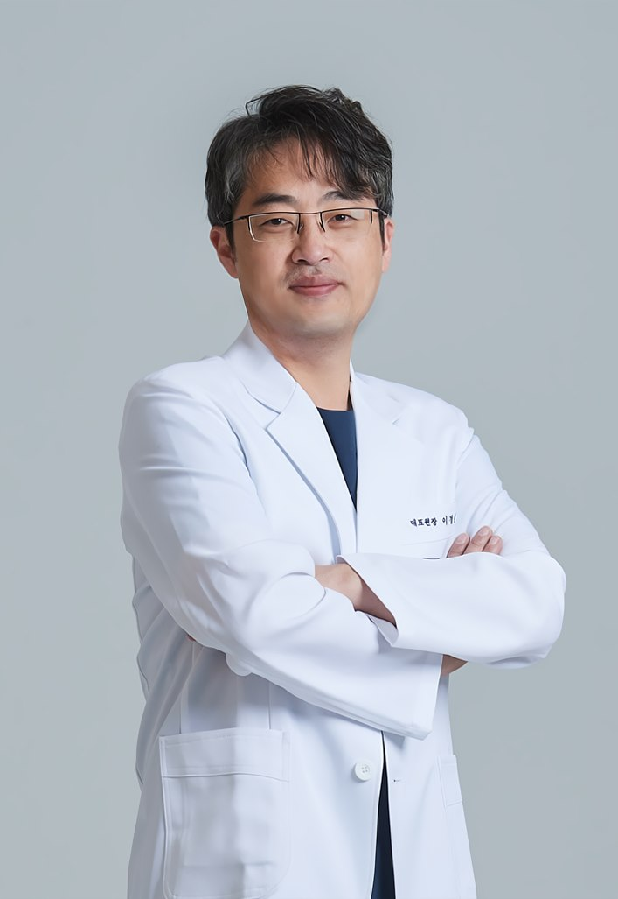

DOCTOR'S COLUMN
원장 컬럼
후한의원 제주점 이경원 대표원장이 진료실에서 자주 받는 질문을
편평사마귀·쥐젖·비립종·점 제거 중심으로 하나씩 정리합니다.

편평사마귀
편평사마귀, 왜 자꾸 번질까요? [후한의원 제주점 칼럼]
한두 개였던 편평사마귀가 얼굴과 목으로 번지는 이유와, 개수가 적을 때 정리하는 편이 유리한 이유를 정리했습니다.
· 이경원 대표원장
감별 진단
쥐젖·비립종·편평사마귀, 어떻게 구분하나요?
비슷해 보이지만 원인과 치료 방향이 다른 세 가지 병변의 차이를 진료실 기준으로 설명드립니다.
· 이경원 대표원장
치료 방법
열을 쓰지 않는 침 치료, 어떻게 진행되나요?
후한의원 제주점의 편평사마귀·쥐젖 침 제거 과정을 상담부터 시술, 당일 관리까지 순서대로 안내합니다.
· 이경원 대표원장
점 제거
점 제거, 미리 알아두면 좋은 것들
점을 빼기 전에 확인할 것, 침으로 제거하는 과정, 제거 후 자국이 옅어지기까지의 경과를 정리했습니다.
· 이경원 대표원장
치료 후 관리
제거 후 재발과 흉터를 줄이는 관리법
시술 직후 상처 관리부터 자외선 차단, 생활 습관까지 재발 가능성과 흉터 부담을 낮추기 위해 신경 써야 할 부분을 안내합니다.
· 이경원 대표원장
본 컬럼은 일반적인 의학 정보 제공을 목적으로 하며, 개인의 상태에 따라 진단과 치료 방법은 달라질 수 있습니다.